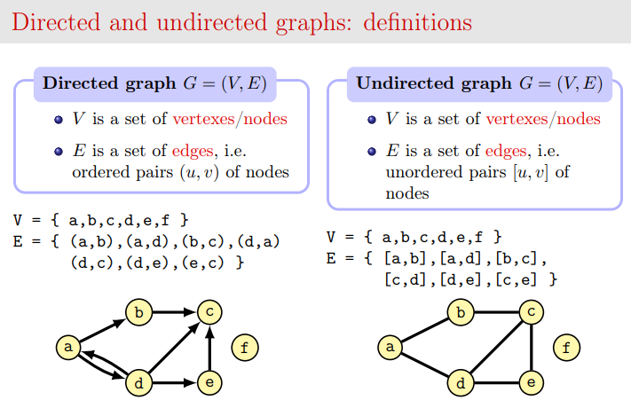
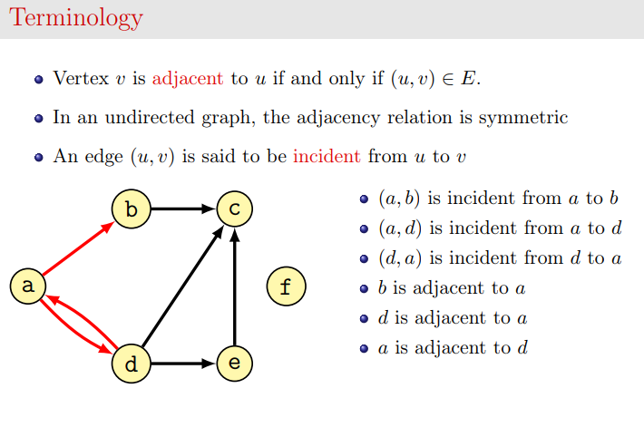
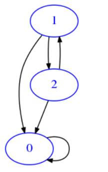
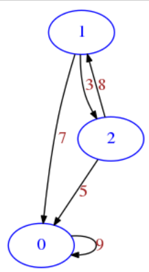

Data formats 4 - Graphs¶
Introduction¶
Usual matrices from linear algebra are of great importance in computer science because they are widely used in many fields, for example in machine learning and network analysis. This tutorial will give you an appreciation of the meaning of matrices when considered as networks or, as we call them in computer science, graphs. We will also review other formats for storing graphs, such as adjacency lists and a have a quick look at a specialized library called Networkx.
Required libraries¶
In order for visualizations to work, you need installed the python library networkx and pydot. Pydot is an interface to the non-pyhon package GraphViz.
Anaconda:
From Anaconda Prompt:
Install GraphViz:
conda install graphviz
Install python packages:
conda install pydot networkx
Ubuntu
From console:
Install PyGraphViz (note: you should use apt to install it, pip might give problems):
sudo apt-get install python3-pygraphviz
Install python packages:
python3 -m pip install --user pydot networkx
Graph definition¶
In computer science a graph is a set of verteces V (also called nodes) linked by a set of edges E. You can visualize nodes as circles and links as lines. If the graph is undirected, links are just lines, if the graph is directed, links are represented as arrows with a tip to show the direction:
 Credits: slide by Dr Alberto Montresor
 Credits: slide by Dr Alberto Montresor
For our purposes, we will consider directed graphs (also called digraphs).
Usually we will indicate nodes with numbers going from zero included but optionally they can be labelled. Since we are dealing with directed graphs, we can have an arrow going for example from node 1 to node 2, but also another arrow going from node 2 to node 1. Furthemore, a node (for example node 0) can have a cap, that is an edge going to itself:

Edge weights¶
Optionally, we will sometimes assign a weight to the edges, that is a number to be shown over the edges. So we can modify the previous example. Note we can have an arrow going from node 1 to node 2 with a weight which is different from the weight arrow from 2 to 1:

Matrices¶
Here we will represent graphs as matrices, which performance-wise is particularly good when the matrix is dense, that is, has many entries different from zero. Otherwise, when you have a so-called sparse matrix (few non-zero entries), it is best to represent the graph with adjacency list, but we will deal with them later.
If you have a directed graph (digraph) with n verteces, you can represent it as an n x n matrix by considering each row as vertex:
A row at index
irepresents the outward links from nodeito the othernnodes, with possibly nodeiitself included.A value of zero means there is no link to a given node.
In general,
mat[i][j]is the weight of the edge between nodeito nodej
Visualization examples¶
We defined a function soft.draw_matto display matrices as graphs (you don’t need to understand the internals, for now we won’t go into depth about matrix visualizations).
If it doesn’t work, see above Required libraries paragraph
[2]:
# PLEASE EXECUTE THIS CELL TO CHECK IF VISUALIZATION IS WORKING
# notice links with weight zero are not shown)
# all weights are set to 1
# first need to import this
from soft import draw_mat
mat = [
[1,1,0,1], # node 0 is linked to node 0 itself, node 1 and node 2
[0,0,1,1], # node 1 is linked to node 2 and node 3
[1,1,1,1], # node 2 is linked to node 0, node 1, node 2 itself and node 3
[0,1,0,1] # node 3 is linked to node 1 and node 3 itself
]
draw_mat(mat)
Saving a graph to an image file¶
If you want (or if you are not using Jupyter), optionally you can save the graph to a .png file by specificing the save_to filepath:
[3]:
mat = [
[1,1],
[0,1]
]
draw_mat( mat, save_to='example.png')
Image saved to file: example.png
Saving a graph to an dot file¶
You can also save a graph to the original dot language of GraphViz:
[4]:
mat = [
[1,1],
[0,1]
]
draw_mat( mat, save_to='example.dot')
Dot saved to file: example.dot
Note no visualization occurs, as you probably might need this kind of output when GraphViz is not installed in your system and you want to display the file elsewhere.
There are lots of websites that take .dot and output images, for example https://dreampuf.github.io/GraphvizOnline
We output here the file content, try to copy/paste it in the above website:
[5]:
with open('example.dot') as f:
print(f.read())
digraph {
scale=3;
style="dotted, rounded";
node [color=blue, fontcolor=blue];
edge [arrowsize="0.6", splines=curved, fontcolor=brown];
0;
1;
0 -> 0 [weight=1, label=1];
0 -> 1 [weight=1, label=1];
1 -> 1 [weight=1, label=1];
}
Minimal graph¶
With this representation derived from matrices as we intend them (that is with at least one row and one column), the corresponding minimal graph can have only one node:
[6]:
minimal = [
[0]
]
draw_mat(minimal)
If we set the weight different from zero, the zeroeth node will link to itself (here we put the weight 5 in the link):
[7]:
minimal = [
[5]
]
draw_mat(minimal)
Graph with two nodes example¶
[8]:
m = [
[5,9], # node 0 links to node 0 itself with a weight of 5, and to node 1 with a weight of 9
[0,6], # node 1 links to node 1 with a weight of 6
]
draw_mat(m)
Distance matrix¶
Depending on the problem at hand, it may be reasonable to change the weights. For example, on a road network the nodes could represent places and the weights could be the distances. If we assume it is possible to travel in both directions on all roads, we get a matrix symmetric along the diagonal, and we can call the matrix a distance matrix. Talking about the diagonal, for the special case of going from a place to itself, we set that street length to 0 (which make sense for street length but could give troubles for other purposes, for example if we give the numbers the meaning ‘is connected’ a place should always be connected to itself)
[9]:
# distance matrix example
mat = [
[0,6,0,8], # place 0 is linked to place 1 and place 2
[6,0,9,7], # place 1 is linked to place 0, place 2 and place 3
[5,9,0,4], # place 2 is linked to place 0, place 1 and place 3
[8,7,4,0] # place 3 is linked to place 0, place 1 and place 2
]
draw_mat(mat)
More realistic traffic road network, where going in one direction might take actually longer than going back, because of one-way streets and different routing times.
[10]:
mat = [
[0,6,0,8], # place 0 is linked to place 1 and place 2
[9,0,9,7], # place 1 is linked to place 0, place 2 and place 3
[5,5,0,4], # place 2 is linked to place 0, place 1 and place 3
[7,9,8,0] # place 3 is linked to place 0, place 1, place 2
]
draw_mat(mat)
Boolean matrix example¶
If we are not interested at all in the weights, we might use only zeroes and ones as we did before. But this could have implications when doing operations on matrices, so some times it is better to use only True and False
[11]:
mat = [
[False, True, False],
[False, True, True],
[True, False, True],
]
draw_mat(mat)
Matrix exercises¶
We are now ready to start implementing the following functions. Before even start implementation, for each try to interpret the matrix as a graph, drawing it on paper. When you’re done implementing try to use draw_mat on the results. Notice that since draw_mat is a generic display function and knows nothing about the nature of the graph, sometimes it will not show the graph in the optimal way we humans would use.
Exercise - line¶
✪✪ This function is similar to diag. As that one, you can implement it in two ways: you can use a double for, or a single one (much more efficient). What would be the graph representation of line ?
RETURN a matrix as lists of lists where node i must have an edge to node i + 1 with weight 1
Last node points to nothing
nmust be>= 1, otherwise raisesValueError

[12]:
def line(n):
raise Exception('TODO IMPLEMENT ME !')
assert line(1) == [ [0] ]
assert line(2) == [ [0,1],
[0,0] ]
assert line(3) == [ [0,1,0],
[0,0,1],
[0,0,0] ]
assert line(4) == [ [0,1,0,0],
[0,0,1,0],
[0,0,0,1],
[0,0,0,0] ]
draw_mat(line(4))
Exercise - cross¶
✪✪ RETURN a nxn matrix filled with zeros except on the crossing lines.
nmust be >=1 and odd, otherwise aValueErroris thrown
Example for n=7 :
0001000
0001000
0001000
1111111
0001000
0001000
0001000
Try to figure out how the resulting graph would look like (try to draw on paper, also notice that draw_mat will probably not draw the best possible representation)
[13]:
def cross(n):
raise Exception('TODO IMPLEMENT ME !')
assert cross(1) == [
[1]
]
assert cross(3) == [ [0,1,0],
[1,1,1],
[0,1,0] ]
assert cross(5) == [ [0,0,1,0,0],
[0,0,1,0,0],
[1,1,1,1,1],
[0,0,1,0,0],
[0,0,1,0,0] ]
union¶
When we talk about the union of two graphs, we intend the graph having union of verteces of both graphs and having as edges the union of edges of both graphs. In this exercise, we have two graphs as list of lists with boolean edges. To simplify we suppose they have the same vertices but possibly different edges, and we want to calculate the union as a new graph.
For example, if we have a graph ma like this:
[14]:
ma = [
[True, False, False],
[False, True, False],
[True, False, False]
]
[15]:
draw_mat(ma)
And another mb like this:
[16]:
mb = [
[True, True, False],
[False, False, True],
[False, True, False]
]
[17]:
draw_mat(mb)
The result of calling union(ma, mb) will be the following:
[18]:
res = [[True, True, False], [False, True, True], [True, True, False]]
which will be displayed as
[19]:
draw_mat(res)
So we get same verteces and edges from both ma and mb
Exercise - union¶
✪✪ Takes two graphs represented as nxn matrices of lists of lists with boolean edges, and RETURN a NEW matrix which is the union of both graphs
if
matarow number is different frommatb, raisesValueError
[20]:
def union(mata, matb):
raise Exception('TODO IMPLEMENT ME !')
try:
union([[False],[False]], [[False]])
raise Exception("Shouldn't arrive here !")
except ValueError:
"test passed"
try:
union([[False]], [[False],[False]])
raise Exception("Shouldn't arrive here !")
except ValueError:
"test passed"
ma1 = [ [False] ]
mb1 = [ [False] ]
assert union(ma1, mb1) == [ [False] ]
ma2 = [ [False] ]
mb2 = [ [True] ]
assert union(ma2, mb2) == [ [True] ]
ma3 = [ [True] ]
mb3 = [ [False] ]
assert union(ma3, mb3) == [ [True] ]
ma4 = [ [True] ]
mb4 = [ [True] ]
assert union(ma4, mb4) == [ [True] ]
ma5 = [ [False, False, False],
[False, False, False],
[False, False, False] ]
mb5 = [ [True, False, True],
[False, True, True],
[False, False, False] ]
assert union(ma5, mb5) == [ [True, False, True],
[False, True, True],
[False, False, False] ]
ma6 = [ [True, False, True],
[False, True, True],
[False, False, False] ]
mb6 = [ [False, False, False],
[False, False, False],
[False, False, False] ]
assert union(ma6, mb6) == [ [True, False, True],
[False, True, True],
[False, False, False] ]
ma7 = [ [True, False, False],
[False, True, False],
[True, False, False] ]
mb7 = [ [True, True, False],
[False, False, True],
[False, True, False] ]
assert union(ma7, mb7) == [ [True, True, False],
[False, True, True],
[True, True, False] ]
Subgraph¶
If we interpret a matrix as graph, we may wonder when a graph A is a subgraph of another graph B, that is, when A nodes are a subset of B nodes and when A edges are a subset of B edges. For convenience, here we only consider graphs having the same n nodes both in A and B. Edges may instead vary. Graphs are represented as boolean matrices.
Exercise - is_subgraph¶
✪✪ RETURN True is A is a subgraph of B, that is, some or all of its edges also belong to B. A and B are boolean matrices of size nxn.
If sizes don’t match, raises
ValueError
[21]:
def is_subgraph(mata, matb):
raise Exception('TODO IMPLEMENT ME !')
# the set of edges is empty
ma = [ [False] ]
# the set of edges is empty
mb = [ [False] ]
# an empty set is always a subset of an empty set
assert is_subgraph(ma, mb) == True
# the set of edges is empty
ma = [ [False] ]
# the set of edges contains one element
mb = [ [True] ]
# an empty set is always a subset of any set, so function gives True
assert is_subgraph(ma, mb) == True
ma = [ [True] ]
mb = [ [True] ]
assert is_subgraph(ma, mb) == True
ma = [ [True] ]
mb = [ [False] ]
assert is_subgraph(ma, mb) == False
ma = [ [True, False],
[True, False] ]
mb = [ [True, False],
[True, True] ]
assert is_subgraph(ma, mb) == True
ma = [ [False, False, True],
[True, True,True],
[True, False,True] ]
mb = [ [True, False, True],
[True, True,True],
[True, True,True] ]
assert is_subgraph(ma, mb) == True
Exercise - remove_node¶
✪✪ Here the function text is not so precise, as it is talking about nodes but you have to operate on a matrix. Can you guess exactly what you have to do ? In your experiments, try to draw the matrix before and after executing remove_node
[22]:
def remove_node(mat, i):
""" MODIFIES mat by removing node i.
"""
raise Exception('TODO IMPLEMENT ME !')
m = [ [3,5,2,5],
[6,2,3,7],
[4,2,1,2],
[7,2,2,6] ]
remove_node(m,2)
assert len(m) == 3
for i in range(3):
assert len(m[i]) == 3
Exercise - utriang¶
✪✪✪ You will try to create an upper triangular matrix of side n. What could possibly be the graph interpretation of such a matrix? Since draw_mat is a generic drawing function doesn’t provide the best possible representation, try to draw on paper a more intuitive one.
RETURN a matrix of size nxn which is upper triangular, that is, has all nodes below the diagonal 0, while all the other nodes are set to 1
[23]:
def utriang(n):
raise Exception('TODO IMPLEMENT ME !')
assert utriang(1) == [ [1] ]
assert utriang(2) == [ [1,1],
[0,1] ]
assert utriang(3) == [ [1,1,1],
[0,1,1],
[0,0,1] ]
assert utriang(4) == [ [1,1,1,1],
[0,1,1,1],
[0,0,1,1],
[0,0,0,1] ]
Edge difference¶
The edge difference of two graphs ediff(da,db) is a graph with the edges of the first except the edges of the second. For simplicity, here we consider only graphs having the same verteces but possibly different edges. This time we will try operate on graphs represented as dictionaries of adjacency lists.
For example, if we have
[24]:
da = {
'a':['a','c'],
'b':['b', 'c'],
'c':['b','c']
}
[25]:
draw_adj(da)
and
[26]:
db = {
'a':['c'],
'b':['a','b', 'c'],
'c':['a']
}
[27]:
draw_adj(db)
The result of calling ediff(da,db) will be:
[28]:
res = {
'a':['a'],
'b':[],
'c':['b','c']
}
Which can be shown as
[29]:
draw_adj(res)
Exercise - ediff¶
✪✪✪ Takes two graphs as dictionaries of adjacency lists da and db, and RETURN a NEW graph as dictionary of adjacency lists, containing the same vertices of da, and the edges of da except the edges of db.
As order of elements within the adjacency lists, use the same order as found in da.
We assume all verteces in da and db are represented in the keys (even if they have no outgoing edge), and that da and db have the same keys
EXAMPLE:
da = { 'a':['a','c'],
'b':['b', 'c'],
'c':['b','c']
}
db = { 'a':['c'],
'b':['a','b', 'c'],
'c':['a']
}
assert ediff(da, db) == { 'a':['a'],
'b':[],
'c':['b','c']
}
[30]:
def ediff(da,db):
raise Exception('TODO IMPLEMENT ME !')
da1 = { 'a': [] }
db1 = { 'a': [] }
assert ediff(da1, db1) == { 'a': [] }
da2 = { 'a': [] }
db2 = { 'a': ['a'] }
assert ediff(da2, db2) == { 'a': [] }
da3 = { 'a': ['a'] }
db3 = { 'a': [] }
assert ediff(da3, db3) == { 'a': ['a'] }
da4 = { 'a': ['a'] }
db4 = { 'a': ['a'] }
assert ediff(da4, db4) == { 'a': [] }
da5 = { 'a':['b'],
'b':[]
}
db5 = { 'a':['b'],
'b':[] }
assert ediff(da5, db5) == { 'a':[],
'b':[]
}
da6 = { 'a':['b'],
'b':[]
}
db6 = { 'a':[],
'b':[]
}
assert ediff(da6, db6) == {
'a':['b'],
'b':[]
}
da7 = { 'a':['a','b'],
'b':[]
}
db7 = { 'a':['a'],
'b':[]
}
assert ediff(da7, db7) == { 'a':['b'],
'b':[]
}
da8 = { 'a':['a','b'],
'b':['a']
}
db8 = { 'a':['a'],
'b':['b']
}
assert ediff(da8, db8) == { 'a':['b'],
'b':['a']
}
da9 = { 'a':['a','c'],
'b':['b', 'c'],
'c':['b','c']
}
db9 = { 'a':['c'],
'b':['a','b', 'c'],
'c':['a']
}
assert ediff(da9, db9) == { 'a':['a'],
'b':[],
'c':['b','c']
}
Exercise - pyramid¶
✪✪✪ The following function requires to create a matrix filled with non-zero numbers. Even if don’t know exactly the network meaning, with this fact we can conclude that all nodes are linked to all others. A graph where this happens is called a clique (the Italian name is cricca)
Takes an odd number n >= 1 and RETURN a matrix as list of lists containing numbers displaced like this example for a pyramid of square 7:
1111111
1222221
1233321
1234321
1233321
1222221
1111111
if
nis even, raisesValueError
[31]:
def pyramid(n):
raise Exception('TODO IMPLEMENT ME !')
try:
pyramid(4)
raise Exception("SHOULD HAVE FAILED!")
except ValueError:
"passed test"
assert pyramid(1) == [
[1]
]
assert pyramid(3) == [
[1,1,1],
[1,2,1],
[1,1,1]
]
assert pyramid(5) == [
[1, 1, 1, 1, 1],
[1, 2, 2, 2, 1],
[1, 2, 3, 2, 1],
[1, 2, 2, 2, 1],
[1, 1, 1, 1, 1]
]
Adjacency lists¶
So far, we represented graphs as matrices, saying they are good when the graph is dense, that is any given node is likely to be connected to almost all other nodes - or equivalently, many cell entries in the matrix are different from zero. But if this is not the case, other representations might be needed. For example, we can represent a graph as a adjacency lists.
Let’s look at this 6x6 boolean matrix:
[32]:
m = [
[False, False, False, False, False, False],
[False, False, False, False, False, False],
[True, False, False, True, False, False],
[False, False, False, False, False, False],
[False, False, False, False, False, False],
[False, False, True, False, False, False]
]
We see just a few True, so by drawing it we don’t expect to see many edges:
[33]:
draw_mat(m)

As a more compact representation, we might represent the data as a dictionary of adjacency lists where the keys are the node indexes and the to each node we associate a list with the target nodes it points to.
To reproduce the example above, we can write like this:
[34]:
d = {
0: [], # node 0 links to nothing
1: [], # node 1 links to nothing
2: [0,3], # node 2 links to node 0 and 3
3: [], # node 3 links to nothing
4: [], # node 4 links to nothing
5: [2] # node 5 links to node 2
}
In soft.py, we provide also a function soft.draw_adj to quickly inspect such data structure:
[35]:
from soft import draw_adj
draw_adj(d)
As expected, the resulting graph is the same as for the equivalent matrix representation.
Exercise - mat_to_adj¶
✪✪ Implement a function that takes a boolean nxn matrix and RETURN the equivalent representation as dictionary of adjacency lists. Remember that to create an empty dict you have to write dict()
[36]:
def mat_to_adj(bool_mat):
raise Exception('TODO IMPLEMENT ME !')
m1 = [ [False] ]
d1 = { 0:[] }
assert mat_to_adj(m1) == d1
m2 = [ [True] ]
d2 = { 0:[0] }
assert mat_to_adj(m2) == d2
m3 = [ [False,False],
[False,False] ]
d3 = { 0:[],
1:[]
}
assert mat_to_adj(m3) == d3
m4 = [ [True,True],
[True,True] ]
d4 = { 0:[0,1],
1:[0,1]
}
assert mat_to_adj(m4) == d4
m5 = [ [False,False],
[False,True] ]
d5 = { 0:[],
1:[1]
}
assert mat_to_adj(m5) == d5
m6 = [ [True,False,False],
[True, True,False],
[False,True,False] ]
d6 = { 0:[0],
1:[0,1],
2:[1]
}
assert mat_to_adj(m6) == d6
Exercise - mat_ids_to_adj¶
✪✪ Implement a function that takes a boolean nxn matrix and a list of immutable identifiers for the nodes, and RETURN the equivalent representation as dictionary of adjacency lists.
If matrix is not
nxnoridslength does not matchn, raiseValueError
[37]:
def mat_ids_to_adj(bool_mat, ids):
raise Exception('TODO IMPLEMENT ME !')
try:
mat_ids_to_adj([[False, True]], ['a','b'])
raise Exception("SHOULD HAVE FAILED !")
except ValueError:
"passed test"
try:
mat_ids_to_adj([[False]], ['a','b'])
raise Exception("SHOULD HAVE FAILED !")
except ValueError:
"passed test"
m1 = [ [False] ]
d1 = { 'a':[] }
assert mat_ids_to_adj(m1, ['a']) == d1
m2 = [ [True] ]
d2 = { 'a':['a'] }
assert mat_ids_to_adj(m2, ['a']) == d2
m3 = [ [False,False],
[False,False] ]
d3 = { 'a':[],
'b':[]
}
assert mat_ids_to_adj(m3,['a','b']) == d3
m4 = [ [True,True],
[True,True] ]
d4 = { 'a':['a','b'],
'b':['a','b']
}
assert mat_ids_to_adj(m4, ['a','b']) == d4
m5 = [ [False,False],
[False,True] ]
d5 = { 'a':[],
'b':['b']
}
assert mat_ids_to_adj(m5,['a','b']) == d5
m6 = [ [True,False,False],
[True, True,False],
[False,True,False] ]
d6 = { 'a':['a'],
'b':['a','b'],
'c':['b']
}
assert mat_ids_to_adj(m6,['a','b','c']) == d6
Exercise - adj_to_mat¶
Try now conversion from dictionary of adjacency list to matrix (this is a bit hard).
To solve this, the general idea is that you have to fill an nxn matrix to return. During the filling of a cell at row i and column j, you have to decide whether to put a True or a False. You should put True if in the d list value corresponding to the i-th key, there is contained a number equal to j. Otherwise, you should put False.
If you look at the tests, as inputs we are passing OrderedDict. The reason is that when we check the output matrix of your function, we want to be sure the matrix rows are ordered in a certain way.
But you have to assume d can contain arbitrary ids with no precise ordering, so:
first you should scan the dictionary and lists to save the mapping between indexes to ids in a separate list
NOTE: d.keys() is not exactly a list (does not allow access by index), so you must convert to list with this: list(d.keys())
then you should build the matrix to return, using the previously built list when needed.
✪✪✪ Now implement a function that takes a dictionary of adjacency lists with arbitrary ids and RETURN its representation as an nxn boolean matrix
assume all nodes are present as keys
assume
dis a simple dictionary (not necessarily anOrderedDict)
[38]:
def adj_to_mat(d):
raise Exception('TODO IMPLEMENT ME !')
from collections import OrderedDict
od1 = OrderedDict([ ('a',[]) ])
m1 = [ [False] ]
assert adj_to_mat(od1) == m1
od2 = OrderedDict([ ('a',['a']) ])
m2 = [ [True] ]
assert adj_to_mat(od2) == m2
od3 = OrderedDict([ ('a',['a','b']),
('b',['a','b']) ])
m3 = [ [True, True],
[True, True] ]
assert adj_to_mat(od3) == m3
od4 = OrderedDict([ ('a',[]),
('b',[]) ])
m4 = [ [False, False],
[False, False] ]
assert adj_to_mat(od4) == m4
od5 = OrderedDict([ ('a',['a']),
('b',['a','b']) ])
m5 = [ [True, False],
[True, True] ]
assert adj_to_mat(od5) == m5
od6 = OrderedDict([ ('a',['a','c']),
('b',['c']),
('c',['a','b']) ])
m6 = [ [True, False, True],
[False, False, True],
[True, True, False] ]
assert adj_to_mat(od6) == m6
Exercise - table_to_adj¶
Suppose you have a table expressed as a list of lists with headers like this:
[39]:
m0 = [
['Identifier','Price','Quantity'],
['a',1,1],
['b',5,8],
['c',2,6],
['d',8,5],
['e',7,3]
]
where a, b, c etc are the row identifiers (imagine they represent items in a store), Price and Quantity are properties they might have. NOTE: here we put two properties, but they might have n properties !
We want to transform such table into a graph-like format as a dictionary of lists, which relates store items as keys to the properties they might have. To include in the list both the property identifier and its value, we will use tuples. So you need to write a function that transforms the above input into this:
[40]:
res0 = {
'a':[('Price',1),('Quantity',1)],
'b':[('Price',5),('Quantity',8)],
'c':[('Price',2),('Quantity',6)],
'd':[('Price',8),('Quantity',5)],
'e':[('Price',7),('Quantity',3)]
}
[41]:
def table_to_adj(table):
raise Exception('TODO IMPLEMENT ME !')
m0 = [ ['I','P','Q'] ]
res0 = {}
assert res0 == table_to_adj(m0)
m1 = [
['Identifier','Price','Quantity'],
['a',1,1],
['b',5,8],
['c',2,6],
['d',8,5],
['e',7,3]
]
res1 = {
'a':[('Price',1),('Quantity',1)],
'b':[('Price',5),('Quantity',8)],
'c':[('Price',2),('Quantity',6)],
'd':[('Price',8),('Quantity',5)],
'e':[('Price',7),('Quantity',3)]
}
assert res1 == table_to_adj(m1)
m2 = [
['I','P','Q'],
['a','x','y'],
['b','w','z'],
['c','z','x'],
['d','w','w'],
['e','y','x']
]
res2 = {
'a':[('P','x'),('Q','y')],
'b':[('P','w'),('Q','z')],
'c':[('P','z'),('Q','x')],
'd':[('P','w'),('Q','w')],
'e':[('P','y'),('Q','x')]
}
assert res2 == table_to_adj(m2)
m3 = [
['I','P','Q', 'R'],
['a','x','y', 'x'],
['b','z','x', 'y'],
]
res3 = {
'a':[('P','x'),('Q','y'), ('R','x')],
'b':[('P','z'),('Q','x'), ('R','y')],
}
assert res3 == table_to_adj(m3)
Networkx¶
Before continuing, make sure to have installed the required libraries
Networkx is a library to perform statistics on networks. For now, it will offer us a richer data structure where we can store the properties we want in nodes and also edges.
You can initialize networkx objects with the dictionary of adjacency lists we’ve alredy seen:
[42]:
import networkx as nx
# notice with networkx if nodes are already referenced to in an adjacency list
# you do not need to put them as keys:
G=nx.DiGraph({
'a':['b','c'], # node a links to b and c
'b':['b','c', 'd'] # node b links to b itself, c and d
})
The resulting object is not a simple dict, but something more complex:
[43]:
G
[43]:
<networkx.classes.digraph.DiGraph at 0x7fd92a192dd0>
To display it in a way uniform with the rest of the course, we developed a function called soft.draw_nx :
[44]:
from soft import draw_nx
[45]:
draw_nx(G)
From the picture above, we notice there are no weights displayed, because in networkx they are just considered optional attributes of edges.
To see all the attributes of an edge, you can write like this:
[46]:
G['a']['b']
[46]:
{}
This graph has no attributes for the node, so we get back an empty dict. If we wanted to add a weight of 123 to that particular a b edge, you could write like this:
[47]:
G['a']['b']['weight'] = 123
[48]:
G['a']['b']
[48]:
{'weight': 123}
Let’s try to display it:
[49]:
draw_nx(G)
We still don’t see the weight as weight can be one of many properties: the only thing that gets displayed is the propery label. So let’s set label equal to the weight:
[50]:
G['a']['b']['label'] = 123
[51]:
draw_nx(G)
Fancy networkx graphs¶
With networkx we can set additional attributes to embellish the resulting graph, here we show a bus network example.
[52]:
G = nx.DiGraph()
# we can force horizontal layout like this:
G.graph['graph']= {
'rankdir':'LR',
}
# When we add nodes, we can identify them with an identifier like the
# stop_id which is separate from the label, for example in some unfortunate
# case two different stops can share the same label.
G.add_node('1', label='Trento',
color='orange', fontcolor='black')
G.add_node('723', label='Rovereto',
color='black', fontcolor='black')
G.add_node('870', label='Arco',
color='black', fontcolor='black')
G.add_node('1180', label='Riva',
color='black', fontcolor='blue')
# IMPORTANT: edges connect stop_ids , NOT labels !!!!
G.add_edge('870','1')
G.add_edge('723','1')
G.add_edge('1','1180')
# we can retrieve an edge like this:
edge = G['1']['1180']
# and set attributes, like these:
edge['weight'] = 5 # the actual weight (not shown!)
edge['label'] = str(5) # the label is a string
edge['color'] = '#2ca02c' # we can set some style for the edge, such as color
edge['penwidth']= 4 # and thickness
edge['route_short_name'] = 'B301' # we can add any attribute we want,
# Note these custom ones won't show in the graph
legend = [ {'label': 'B211', 'color': '#2ca02c'} ]
draw_nx(G, legend)
Converting networkx graphs¶
If you try to just output the string representation of the graph, networkx will give the empty string:
[53]:
print(G)
[54]:
str(G)
[54]:
''
[55]:
repr(G)
[55]:
'<networkx.classes.digraph.DiGraph object at 0x7fd92a149090>'
To convert to the dict of adjacency lists we know, you can use this method:
[56]:
nx.to_dict_of_lists(G)
[56]:
{'1': ['1180'], '723': ['1'], '870': ['1'], '1180': []}
The above works, but it doesn’t convert additional edge info. For a complete conversion, use nx.to_dict_of_dicts
[57]:
nx.to_dict_of_dicts(G)
[57]:
{'1': {'1180': {'weight': 5,
'label': '5',
'color': '#2ca02c',
'penwidth': 4,
'route_short_name': 'B301'}},
'723': {'1': {}},
'870': {'1': {}},
'1180': {}}
Exercise - mat_to_nx¶
✪✪ Now try by yourself to convert a matrix as list of lists along with node ids (like you did before) into a networkx object.
This time, don’t create a dictionary to pass it to nx.DiGraph constructor: instead, use networkx methods like .add_edge and add_node. For usage example, check the networkx tutorial. Do you need to explicitly call add_node before referring to some node with add_edge ?
Implement a function that given a real-valued nxn matrix as list of lists and a list of immutable identifiers for the nodes, RETURN the corresponding graph in networkx format (as nx.DiGraph).
If matrix is not nxn or ids length does not match n, raise ValueError
DON’T transform into a dict, use add_ methods from networkx object!
WARNING: Remember to set the labels to the weights AS STRINGS!
[58]:
def mat_to_nx(mat, ids):
raise Exception('TODO IMPLEMENT ME !')
try:
mat_ids_to_adj([[0, 3]], ['a','b'])
raise Exception("SHOULD HAVE FAILED !")
except ValueError:
"passed test"
try:
mat_ids_to_adj([[0]], ['a','b'])
raise Exception("SHOULD HAVE FAILED !")
except ValueError:
"passed test"
m1 = [ [0] ]
d1 = {'a': {}}
assert nx.to_dict_of_dicts(mat_to_nx(m1, ['a'])) == d1
m2 = [ [7] ]
d2 = {'a': {'a': {'weight': 7, 'label': '7'}}}
assert nx.to_dict_of_dicts(mat_to_nx(m2, ['a'])) == d2
m3 = [ [0,0],
[0,0] ]
d3 = { 'a':{},
'b':{}
}
assert nx.to_dict_of_dicts(mat_to_nx(m3,['a','b'])) == d3
m4 = [ [7,9],
[8,6] ]
d4 = { 'a':{'a': {'weight':7,'label':'7'},
'b' : {'weight':9,'label':'9'},
},
'b':{'a': {'weight':8,'label':'8'},
'b' : {'weight':6,'label':'6'},
}
}
assert nx.to_dict_of_dicts(mat_to_nx(m4, ['a','b'])) == d4
m5 = [ [0,0],
[0,7] ]
d5 = { 'a':{},
'b':{
'b' : {'weight':7,'label':'7'},
}
}
assert nx.to_dict_of_dicts(mat_to_nx(m5,['a','b'])) == d5
m6 = [ [7,0,0],
[7,9,0],
[0,7,0] ]
d6 = { 'a':{
'a' : {'weight':7,'label':'7'},
},
'b': {
'a': {'weight':7,'label':'7'},
'b' : {'weight':9,'label':'9'}
},
'c':{
'b' : {'weight':7,'label':'7'}
}
}
assert nx.to_dict_of_dicts(mat_to_nx(m6,['a','b','c'])) == d6
Simple statistics¶
We will now compute simple statistics about graphs (they don’t require node discovery algorithms).
Outdegrees and indegrees¶
The out-degree \(\deg^+(v)\) of a node \(v\) is the number of edges going out from it, while the in-degree \(\deg^-(v)\) is the number of edges going into it.
NOTE: the out-degree and in-degree are not the sum of weights ! They just count presence or absence of edges.
For example, consider this graph:
[59]:
from soft import draw_adj
d = {
'a' : ['b','c'],
'b' : ['b','d'],
'c' : ['a','b','c','d'],
'd' : ['b','d']
}
draw_adj(d)
The out-degree of d is 2, because it has one outgoing edge to b but also an outgoing edge to itself. The indegree of d is 3, because it has an edge coming from b, one from c and one self-loop from d itself.
Exercise - outdegree_adj¶
✪ RETURN the outdegree of a node from graph d represented as a dictionary of adjacency lists
If
vis not a vertex ofd, raiseValueError
[60]:
def outdegree_adj(d, v):
raise Exception('TODO IMPLEMENT ME !')
try:
outdegree_adj({'a':[]},'b')
raise Exception("SHOULD HAVE FAILED !")
except ValueError:
"passed test"
assert outdegree_adj({
'a':[]
},'a') == 0
assert outdegree_adj({
'a':['a']
},'a') == 1
assert outdegree_adj({
'a':['a','b'],
'b':[]
},'a') == 2
assert outdegree_adj({
'a':['a','b'],
'b':['a','b','c'],
'c':[]
},'b') == 3
Exercise - outdegree_mat¶
✪✪ RETURN the outdegree of a node i from a graph boolean matrix nxn represented as a list of lists
If
iis not a node of the graph, raiseValueError
[61]:
def outdegree_mat(mat, i):
raise Exception('TODO IMPLEMENT ME !')
try:
outdegree_mat([[False]],7)
raise Exception("SHOULD HAVE FAILED !")
except ValueError:
"passed test"
try:
outdegree_mat([[False]],-1)
raise Exception("SHOULD HAVE FAILED !")
except ValueError:
"passed test"
assert outdegree_mat(
[
[False]
]
,0) == 0
assert outdegree_mat( [ [True] ],
0) == 1
assert outdegree_mat( [ [True, True],
[False, False] ],
0) == 2
assert outdegree_mat([ [True, True, False],
[True, True, True],
[False, False, False] ],1) == 3
Exercise - outdegree_avg¶
✪✪ RETURN the average outdegree of nodes in graph d, represented as dictionary of adjacency lists.
Assume all nodes are in the keys.
[62]:
def outdegree_avg(d):
raise Exception('TODO IMPLEMENT ME !')
assert outdegree_avg({
'a':[]
}) == 0
assert round( outdegree_avg({
'a':['a']
})
,2) == 1.00 / 1.00
assert round( outdegree_avg({
'a':['a','b'],
'b':[]
})
,2) == (2 + 0) / 2
assert round( outdegree_avg({
'a':['a','b'],
'b':['a','b','c'],
'c':[]
})
,2) == round( (2 + 3) / 3 , 2)
Exercise - indegree_adj¶
The indegree of a node v is the number of edges going into it.
✪✪ RETURN the indegree of node v in graph d, represented as a dictionary of adjacency lists
If
vis not a node of the graph, raiseValueError
[63]:
def indegree_adj(d, v):
raise Exception('TODO IMPLEMENT ME !')
try:
indegree_adj({'a':[]},'b')
raise Exception("SHOULD HAVE FAILED !")
except ValueError:
"passed test"
assert indegree_adj({
'a':[]
},'a') == 0
assert indegree_adj({'a':['a']},'a') == 1
assert indegree_adj({ 'a':['a','b'],
'b':[]},
'a') == 1
assert indegree_adj({ 'a':['a','b'],
'b':['a','b','c'],
'c':[]},
'b') == 2
Exercise - indegree_mat¶
✪✪ RETURN the indegree of a node i from a graph boolean matrix nxn represented as a list of lists
If
iis not a node of the graph, raiseValueError
[64]:
def indegree_mat(mat, i):
raise Exception('TODO IMPLEMENT ME !')
try:
indegree_mat([[False]],7)
raise Exception("SHOULD HAVE FAILED !")
except ValueError:
"passed test"
assert indegree_mat(
[
[False]
]
,0) == 0
assert indegree_mat( [[True]],0) == 1
assert indegree_mat( [ [True, True],
[False, False] ],0) == 1
assert indegree_mat( [ [True, True, False],
[True, True, True],
[False, False, False] ],
1) == 2
Exercise - indegree_avg¶
✪✪ RETURN the average indegree of nodes in graph d, represented as dictionary of adjacency lists.
Assume all nodes are in the keys
[65]:
def indegree_avg(d):
raise Exception('TODO IMPLEMENT ME !')
assert indegree_avg({
'a':[]
}) == 0
assert round( indegree_avg({ 'a':['a'] }),
2) == 1.00 / 1.00
assert round( indegree_avg({ 'a':['a','b'],
'b':[]}),
2) == (1 + 1) / 2
assert round( indegree_avg({ 'a':['a','b'],
'b':['a','b','c'],
'c':[]}),
2) == round( (2 + 2 + 1) / 3 , 2)
Was it worth it?¶
QUESTION: Is there any difference between the results of indegree_avg and outdegree_avg ?
Exercise - min_outdeg¶
Difficulty: ✪✪✪
Takes a graph as matrix of list of lists and RETURN the minimum outdegree of nodes with row index between indeces start (included) and end included
IMPORTANT: This function MUST be recursive, so it must call itself.
HINT: REMEMBER to put
returninstructions in allifbranches!
[66]:
def helper(mat, start, end):
raise Exception('TODO IMPLEMENT ME !')
def min_outdeg(mat):
""" Takes a graph as matrix of list of lists and RETURN the minimum
outdegree of nodes by calling function helper.
min_outdeg function is *not* recursive, only function helper is.
"""
raise Exception('TODO IMPLEMENT ME !')
assert min_outdeg( [ [False] ]) == 0
assert min_outdeg([ [True] ]) == 1
assert min_outdeg( [ [False, True],
[True, False] ]) == 1
assert min_outdeg( [ [True, True, False],
[True, True, True],
[False, True, True] ]) == 2
assert min_outdeg( [ [True, True, False],
[True, True, True],
[False, True, False] ]) == 1
assert min_outdeg( [ [True, True, True],
[True, True, True],
[False, True, False] ]) == 1
networkx Indegrees and outdegrees¶
With Networkx we can easily calculate indegrees and outdegrees of a node:
[67]:
import networkx as nx
# notice with networkx if nodes are already referenced to in an adjacency list
# you do not need to put them as keys:
G=nx.DiGraph({
'a':['b','c'], # node a links to b and c
'b':['b','c', 'd'] # node b links to b itself, c and d
})
draw_nx(G)

[68]:
G.out_degree('a')
[68]:
2
QUESTION: What is the outdegree of 'b' ? Try to think about it and then confirm your thoughts with networkx:
[69]:
# write here
QUESTION: We defined indegree and outdegree. Can you guess what the degree might be ? In particular, for a self pointing node like 'b', what could it be? Try to use G.degree('b') methods to validate your thoughts.
[70]:
# write here
[71]:
# write here
[72]:
draw_nx(mat_to_nx([
[7,0,0],
[7,9,0],
[0,7,0]
], ['a','b','c']))
Continue¶
Go on with the challenges